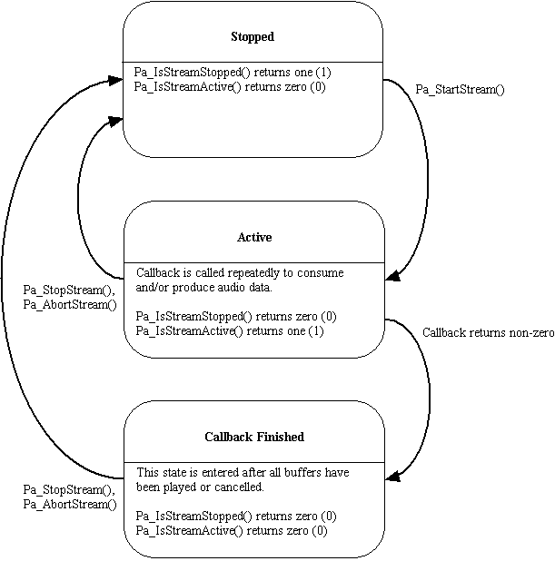

Enhancement Proposals Index, PortAudio Home Page
Updated: July 23, 2002
This proposal is sufficiently well defined to be implemented and has been implemented in v19-devel.
Interaction between Pa_StartStream(), Pa_StopStream() and Pa_AbortStream(), and the ability to stop a stream by returning non-zero from the callback function was never clearly documented. After returning non-zero from the callback it was not clear whether the stream was stopped (meaning that Pa_StartStream() could be called immediately) or whether the Stream was in some intermediate state, requiring Pa_StopStream() to be called prior to being Started again. The availability of Pa_StreamActive() implied the latter case, but it was never documented.
In order for the common infrastructure to manage some stream state transitions (such as automatically stopping an active stream when closing it) a function to query whether the stream is stopped is required.
It has been suggested that it should be possible for the callback return value to indicate whether a stream should stop immediately or that it should stop after all queued buffers have been played (current behavior.) Thus providing similar behavior to Pa_StopStream()/Pa_AbortStream() from the callback.
This proposal documents the previously implicit state machine for PortAudio Streams and provides a new accessor function for determining whether the stream is stopped. It also defines 3 new constants which can be used as return values from the callback.
PortAudio streams will function according to the following state machine:

A new function Pa_IsStreamStopped() will be added to allow clients to determine whether the Stream is in the Stopped state.
Two new error codes: paStreamIsStopped and paStreamIsNotStopped will be added (see below for usage.)
Stream functions will interact with the state machine as follows:
Pa_OpenStream() -> creates a stream in the Stopped state Pa_CloseStream() -> always closes a stream, if the stream is not Stopped it will be automatically aborted using Pa_AbortStream() before being closed. In the Stopped state: Pa_StartStream() -> transitions to Active state Pa_StopStream() -> returns paStreamIsStopped error Pa_AbortStream()-> returns paStreamIsStopped error Pa_IsStreamStopped() -> returns one (1), or error code Pa_IsStreamActive() -> returns zero (0), or error code In the Active state: Pa_StartStream() -> returns paStreamIsNotStopped error Pa_StopStream() -> stops calling the callback and blocks until all buffers have been played : transitions to Stopped state Pa_AbortStream()-> if possible, discards all queued buffers instead of waiting for them to be played, otherwise same as Pa_StopStream() : transitions to Stopped state Pa_IsStreamStopped() -> returns zero (0), or error code Pa_IsStreamActive() -> returns one (1), or error code In the Callback Finished state: Pa_StartStream() -> returns paStreamIsNotStopped error Pa_StopStream() -> transitions to Stopped state Pa_AbortStream()-> transitions to Stopped state Pa_IsStreamStopped() -> returns zero (0), or error code Pa_IsStreamActive() -> returns zero (0), or error code
Three new constants: paContinue(0), paComplete(1) and paAbort(2) will be defined for use as return values from the callback. Both paComplete and paAbort cause PortAudio to stop calling the callback. paComplete will cause a transition to the Callback Finished state once all buffers have been played, paAbort indicates that PortAudio may to attempt to cancel pending buffers before transitioning to the Callback Finished state. Note that returning any other non-zero value from the callback will have the same effect as returning paComplete, in order to maximise backwards compatibility.
As the host may buffer samples, it is possible for a perceptible delay to arise between the callback generating samples and them being heard. Sometimes it is desirable to wait for all generated samples to be played before closing a stream - for example when waiting for the end of a soundfile to complete playbeck. At other times it may be desirable to stop the stream as quickly as possible, without necessarily waiting for all queued samples to be played. This latter situation can occur when exiting an application or closing a document - providing good interactive performance to the end-user may necessitate aborting the stream rather than pausing for a significant period waiting for the queued samples to complete. These two use-cases are respectively addressed by the Pa_StopStream() and Pa_AbortStream() functions, and by the paComplete and paAbort callback return values.
It has been noted that not all host APIs support the cancellation of already queued samples or buffers, thus making it impossible to usefully implement Pa_AbortStream. In such cases, Pa_AbortStream() will have the same behavior as Pa_StopStream(), and returning paAbort from the callback will have the behavior as returning paComplete.
The multi-host-API common infrastructure requires a function like Pa_IsStreamStopped() so that it can automatically call Pa_AbortStream() if Pa_CloseStream() is called on an Active stream. The availability of this state information may also be used to implement error results when actions are not valid for the current stream state (calling Pa_StartStream() on a Active stream for example.)
Clients who currently return 2 from the callback will need to change the callback return value to paFinish to retain the expected behavior.